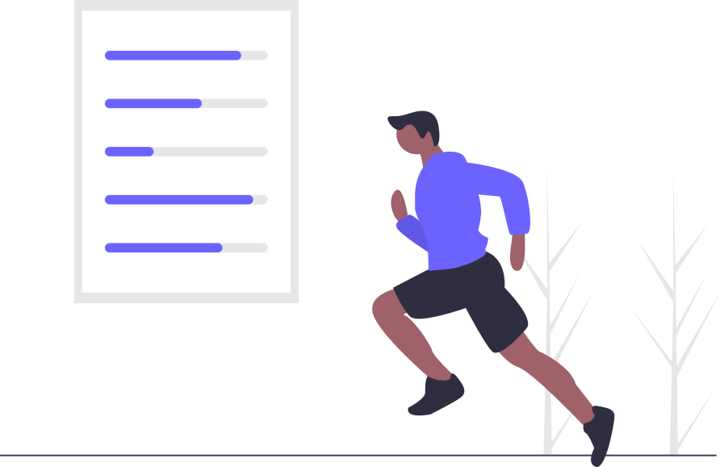

Dicas para uma vida mais saudável
Alimentação equilibrada
Prefira frutas, verduras, legumes e grãos integrais. Evite ultraprocessados e excesso de açúcar.
Atividade física
Pratique pelo menos 150 minutos de atividade moderada por semana, como caminhada ou bicicleta.
Hidratação
Beba cerca de 2 litros de água por dia. A hidratação adequada ajuda no metabolismo e na disposição.
Sono de qualidade
Durma de 7 a 9 horas por noite. O sono regular contribui para o controle do peso e da saúde mental.
Saúde mental
Cuide do estresse, mantenha vínculos sociais e procure ajuda profissional quando necessário.
Acompanhamento
Procure a Unidade Básica de Saúde (UBS) para avaliações periódicas e orientações individuais.
Recomendação para o seu resultado
Calcule seu IMC para ver uma recomendação personalizada.
Fontes: Ministério da Saúde • OMS • BVS Saúde